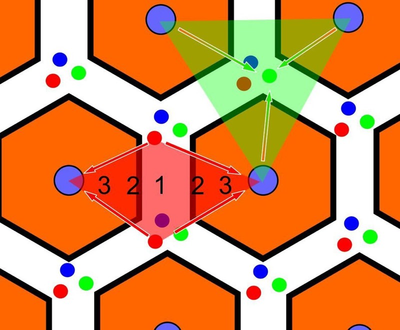
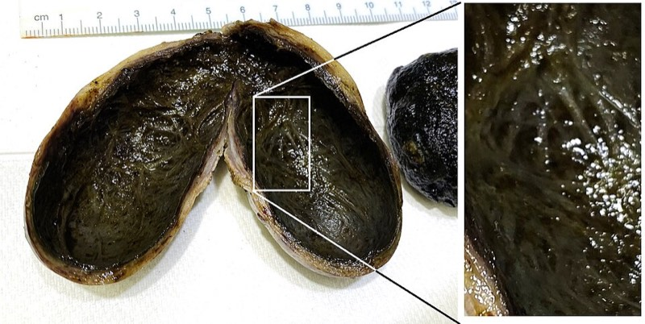

A 機轉層 為什麼會這樣（一階）
TERT 啟動子活化
端粒酶重新開啟
B 決策層 這一步做什麼（主脊椎）
每 6 個月
腹部超音波 ± AFP
發現結節
動態 CT 或 MRI
C 數據層 看哪些數字、切點在哪
HBsAg
現行感染
量化 HBsAg 才能反映 cccDNA 活性
HBeAg / anti-HBe
病毒複製活性
precore 突變者 HBeAg 陰性但病毒量仍高
ALT
肝細胞損傷
不等於肝功能；免疫耐受期可完全正常
AFP
HCC 輔助
敏感度僅約 60%；肝炎活動、懷孕、生殖細胞瘤亦升高；不可單獨用於診斷
PIVKA-II (DCP)
HCC 輔助
維生素 K 缺乏或用 warfarin 時偽陽性
HCC 的影像診斷特殊性（這是 113-1 醫學三 Q21 的答案核心）
動脈期高強化（arterial phase hyperenhancement, APHE）——因為腫瘤由肝動脈供血；
門脈期／延遲期洗脫（washout）——因為腫瘤缺乏正常門脈供血與竇狀隙結構；
可有假包膜（capsule appearance）。
浸潤型 HCC：邊界不清＋門靜脈腫瘤栓塞（可見栓塞內動脈期強化，與單純血栓區分）。
良性鑑別：血管瘤為週邊結節狀漸進填充；FNH 有中央疤痕；肝腺瘤易出血且與口服避孕藥相關
D 考點層 國考怎麼考、陷阱在哪
在「治療適應症」題目塞入與決策無關的檢驗值；在「米蘭準則」題目塞入
111-1 二階 醫學三 74
動態 CT 肝腫瘤判讀（影像題）
→ 依強化型態辨識良惡性
111-1 二階 醫學三 75
B 肝追蹤中發現 CT 異常
→ 高風險背景＋典型強化 → HCC
113-2 二階 醫學五 72
浸潤型 HCC 最常合併的影像發現
→ 門靜脈腫瘤栓塞
114-2 二階 醫學三 37
HCC 分子基因變異
→ TERT／CTNNB1／TP53 的角色
115-1 二階 醫學五 19
B 肝追蹤發現肝腫瘤的下一步
→ 動態影像確認強化型態
E 圖譜層 長什麼樣
肝小葉與肝腺泡分區示意：Zone 1 近門脈氧最足、Zone 3 近中央靜脈最缺氧且 CYP450 最多，解釋乙醯胺酚毒

CC BY-SA 3.0／No machine-readable author provided. MarquardtM assumed (based on copyright claims).
中度分化肝細胞癌組織學：腫瘤細胞呈小樑狀排列、細胞索增厚

CC BY 4.0／Wong, Chun-Ming; Zhang, Chris Zhiyi; Liu, Lili; Cai, Muyan; Pan, Yinghua; Fu, Jia; Cao, Yun; Yun, Jingping
剖開的膽囊與色素性結石。膽結石是急性胰臟炎與膽管炎的最大宗病因

CC0／Mikael Häggström, M.D. Author info - Reusing images- Conflicts of interest: None Mikael Häggström, M.D.Consent note: Co
HBV 血清學時序圖
CDC Viral Hepatitis — Interpretation of Hepatitis B Serologic Test Results
美國政府公開資料
F 證據層 背後的文獻
第一線雙免疫
CheckMate 9DW（nivolumab＋ipilimumab）於進展期 HCC 顯示總存活獲益
第一線選項增加，考題可能問「不含抗血管新生的組合」
G 手寫層 留給你自己寫
一線資料
先開哪些檢驗與影像